物料图片匹配结果
生成时间: 2026-07-26 09:55:25
匹配阈值: 50
总物料: 40 项 | 匹配成功: 40 项
#1 齿轮箱弹性支撑
型号: 14/002/003
品牌: ESM
参数: 48763

匹配度: 89.8分
齿轮箱弹性支撑UB 14 002 003.jpg
#2 高速刹车片磨损传感器
型号: 490-3711-804
品牌: SVENDBORG
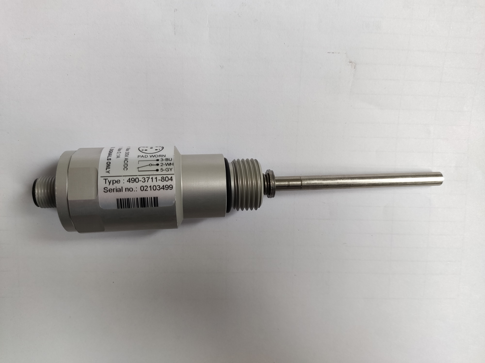
匹配度: 73.8分
高速刹车片磨损传感器490-3711-804.JPG

匹配度: 50.5分
刹车片磨损传感器KYN01-B321C25X-91.8.JPG
#3 K6泵单元
型号: 600-26876-2
品牌: 林肯

匹配度: 100.0分
K6泵单元 600-26876-2.jpg

匹配度: 58.4分
8.5863.0200.G223.S068.K017.jpg

匹配度: 52.3分
制动器60 891.104.1 S 24V 73W 100Nm.jpeg
#4 工业以太网交换机
型号: 6-G20-M16-4POE
品牌: 运达

匹配度: 98.9分
工业以太网交换机WINDEY 6-G20-M16-4POE-1.jpg

匹配度: 98.9分
工业以太网交换机WINDEY 6-G20-M16-4POE-2.jpg

匹配度: 98.9分
工业以太网交换机WINDEY 6-G20-M16-4POE.jpg
#5 编码器
型号: 8.5863.0200.G223.S068.K017
品牌: 库伯勒
匹配度: 86.4分
8.5863.0200.G223.S068.K017.jpg
匹配度: 65.1分
制动器60 891.104.1 S 24V 73W 100Nm.jpeg

匹配度: 64.7分
编码器AC58 1213EK.42SGB.jpg
#6 超声波气象站
型号: 8371.UMT
品牌: Lufft
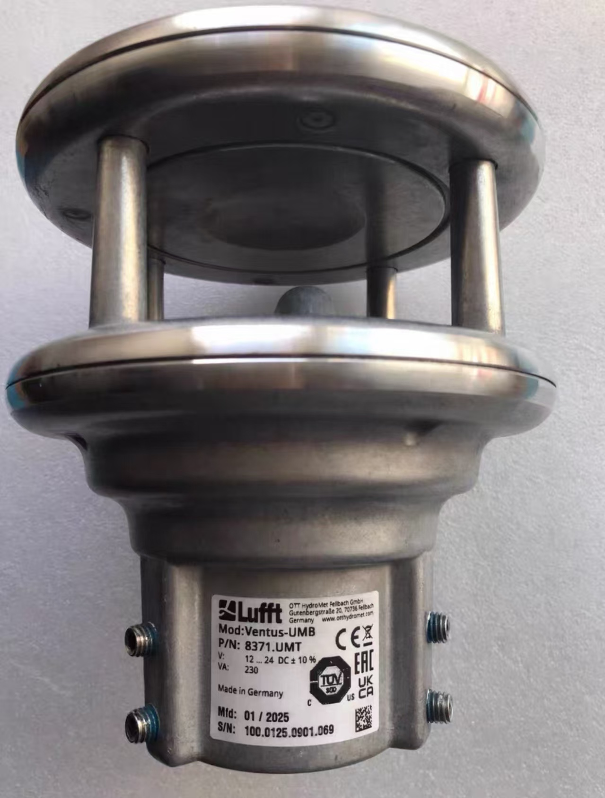
匹配度: 93.4分
超声波气象站8371.UMT.jpg
#7 超级电容
型号: BMOD0058E016B02
品牌: Maxwell

匹配度: 91.2分
超级电容BMOD0058 E016 B02.jpg
#8 分体温度变送器
型号: BSTC1503
品牌: 杭州邦胜

匹配度: 88.9分
分体温度变送器BSTC1503.png
#9 继电器
型号: CR-P024 DC1
品牌: ABB
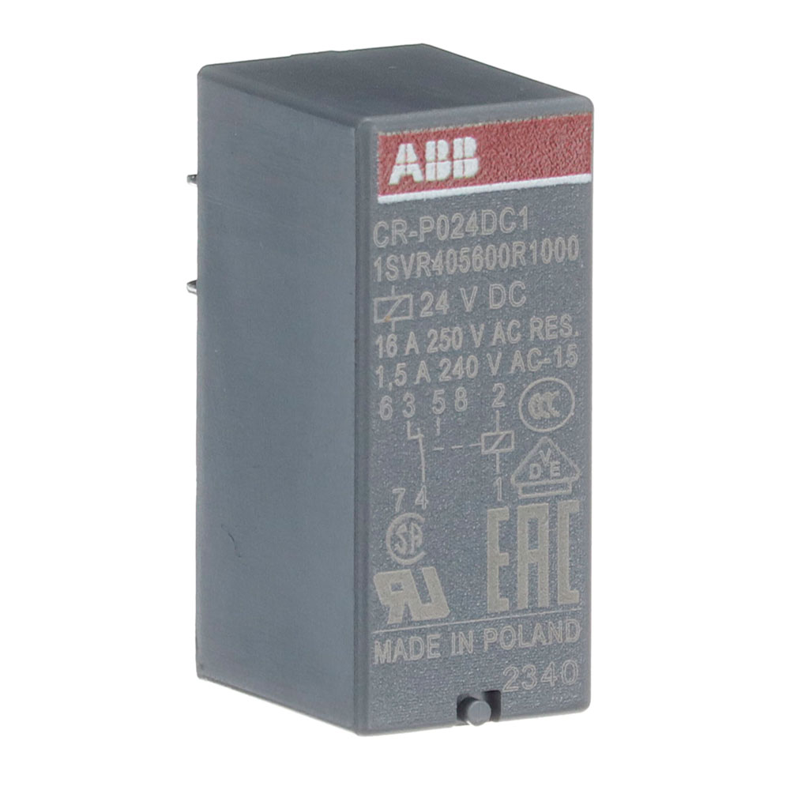
匹配度: 87.8分
中间继电器CR-P024DC1.png
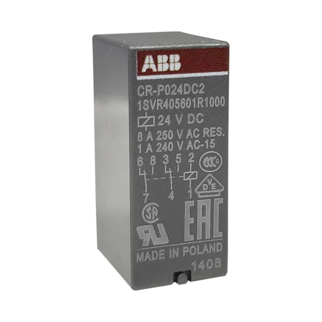
匹配度: 83.8分
中间继电器CR-P024DC2.png
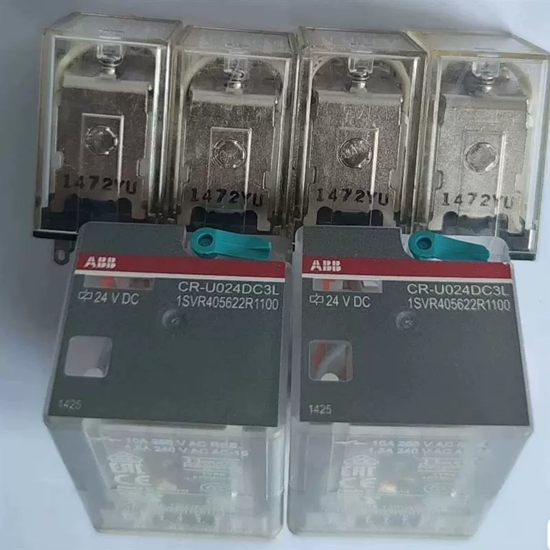
匹配度: 77.1分
中间继电器CR-U024DC3L.webp
#10 充电电阻
型号: DANDTHERM F2 ZR3163150414
品牌: DANDTHERM

匹配度: 99.2分
充电电阻DANDTHERM F2 ZR3163150414.jpg
#11 照明灯
型号: ELE 12D
品牌: 雷子克
参数: 230V 50/60HZ 12W

匹配度: 56.0分
照明灯ELE12D.jpg
匹配度: 50.3分
充电电阻DANDTHERM F2 ZR3163150414.jpg
#12 接触器
型号: EMRC1630
品牌: 艾默生

匹配度: 79.5分
交流接触器 EMRC1-630.jpg
#13 继电器
型号: ES12-200
品牌: ELTAKO

匹配度: 77.5分
继电器 ES12-200-UC-1.jpg

匹配度: 77.5分
继电器 ES12-200-UC.jpg
#14 提升机
型号: EWA1100-10
品牌: 双鸟
参数: 1100kg 400V 105m

匹配度: 79.0分
提升机EWA1100-10.jpg
#15 熔断器
型号: FD20GB100V6T
品牌: MERSEN

匹配度: 81.1分
熔断器FD20GB100V6T.jpg
#16 齿轮箱
型号: FD2250ZB 南高齿 速比：137.47
品牌: 南高齿
参数: 2225kW 速比：137.47 输入转速：13.04r/min
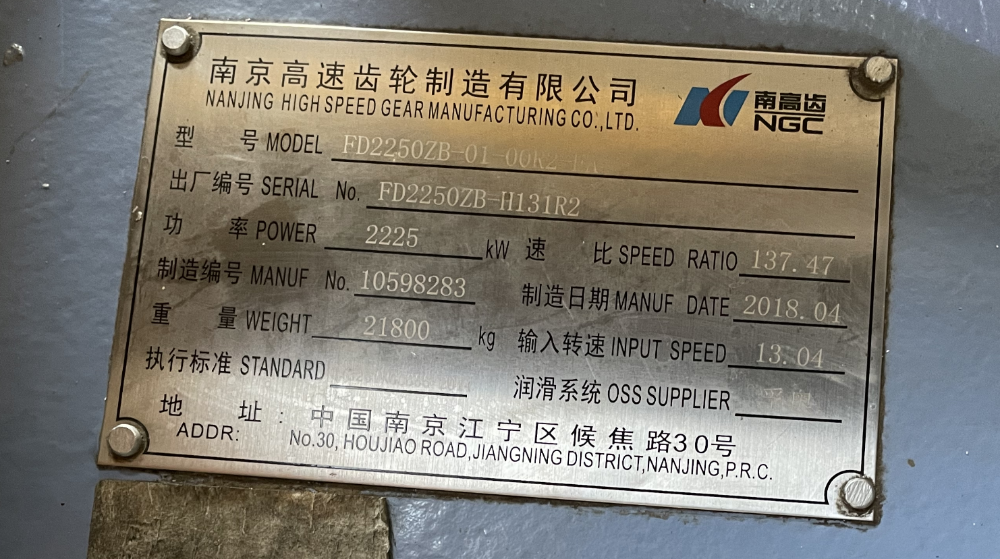
匹配度: 51.9分
齿轮箱FD2250ZB-01-00R2-FA.png
#17 加热器
型号: Garix 300
品牌: Goldmann

匹配度: 68.8分
加热器Garix 300-1.png

匹配度: 68.8分
加热器Garix 300-2.png

匹配度: 68.8分
加热器Garix 300.jpg
#18 总线中继模块
型号: GCAN206
品牌: GCAN

匹配度: 97.2分
总线中继模块GCAN-206-1.png
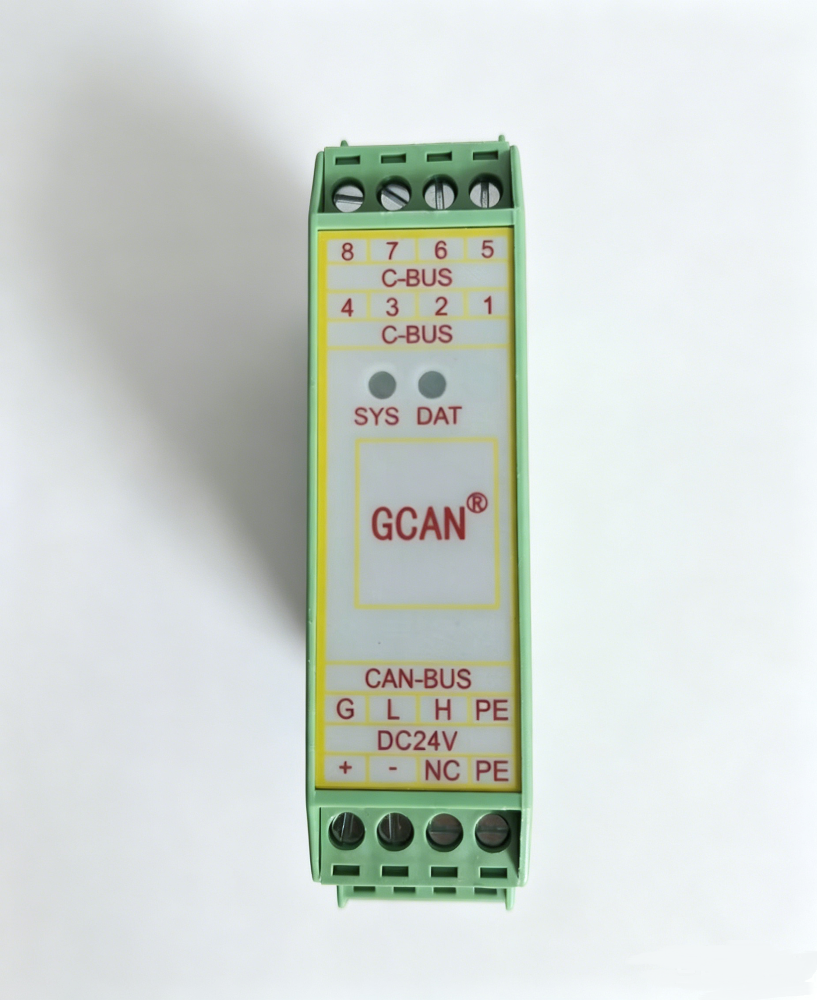
匹配度: 84.9分
总线中继模块GCAN-206.png
#19 DI模块（16点）
型号: GL20-1600END-N (YD)
品牌: 运达
-1.jpg)
匹配度: 99.0分
DI模块（16点）GL20-1600END-N (YD)-1.jpg
.jpg)
匹配度: 99.0分
DI模块（16点）GL20-1600END-N (YD).jpg
#20 通讯滑环
型号: HW 2.5MW-DD-27R
品牌: 汉威

匹配度: 98.2分
通讯滑环HW2.5MW-DD-27R.jpg
#21 刹车片磨损传感器
型号: KYN01
品牌: 英合创展
匹配度: 93.2分
刹车片磨损传感器KYN01-B321C25X-91.8.JPG
匹配度: 73.3分
高速刹车片磨损传感器490-3711-804.JPG

匹配度: 52.6分
磨损传感器NBB5-18GM60-A2-V1.png
#22 溢流阀
型号: MVF4F
品牌: 哈威

匹配度: 90.0分
溢流阀MVF 4 F.jpg

匹配度: 72.7分
溢流阀CMVX 2C-200.jpg
#23 爆破片
型号: RD1850HAWE
品牌: 哈威

匹配度: 77.8分
爆破片RD1850-2.jpg
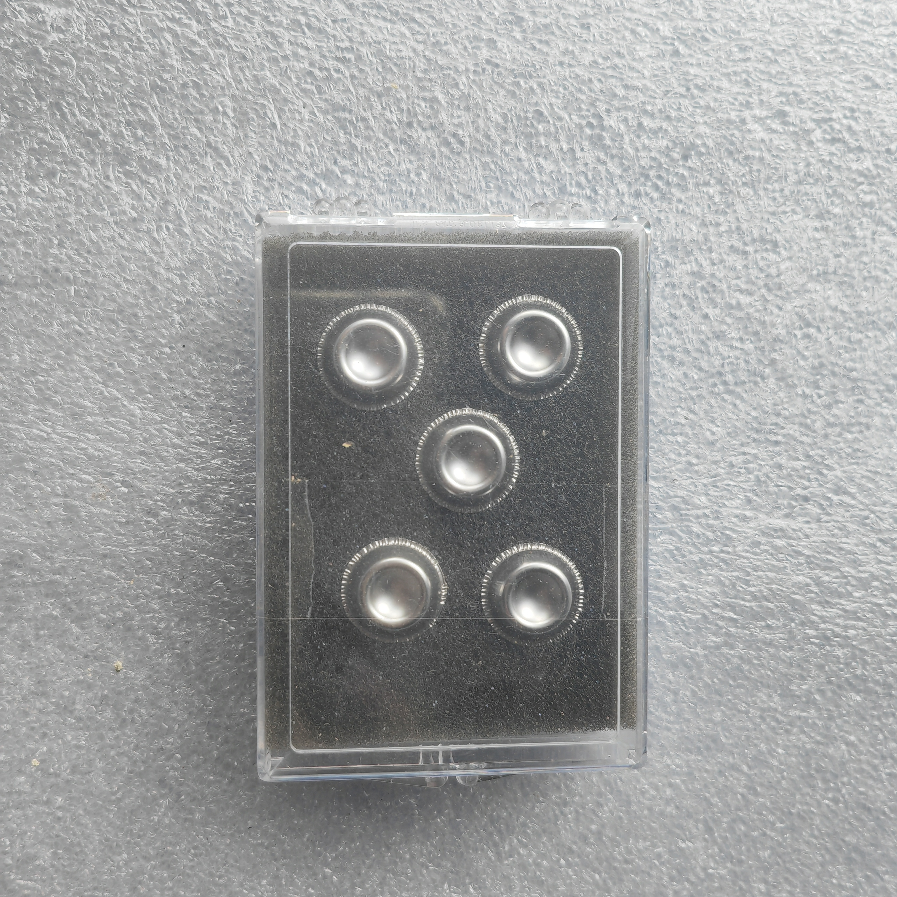
匹配度: 77.8分
爆破片RD1850.jpg
#24 熔断器底座
型号: RX1D-1000
品牌: 华东特种熔断器
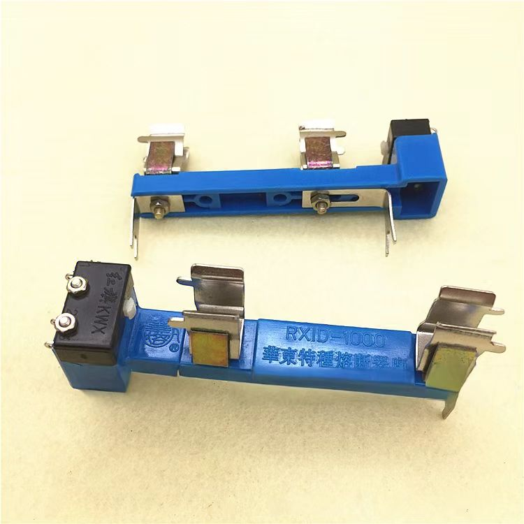
匹配度: 80.5分
熔断器底座RX1D-1000.jpg
匹配度: 52.8分
熔断器FD20GB100V6T.jpg
#25 开关发讯器
型号: SFIE-3-R-18
品牌: 西德福

匹配度: 94.4分
开关发讯器SFIE-3-R-18-1.jpg
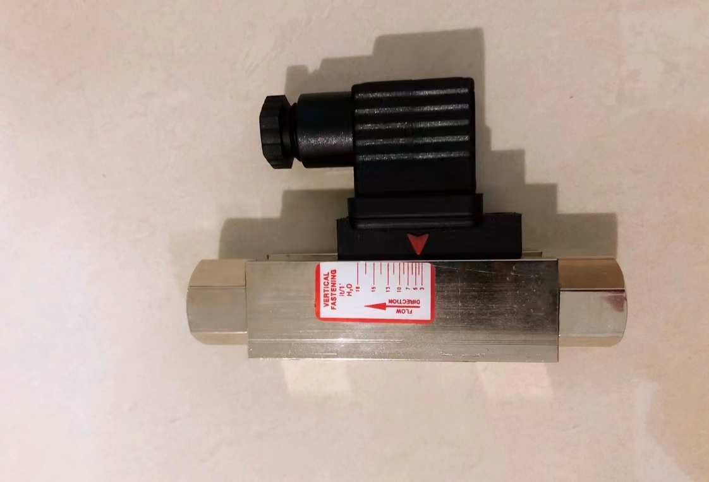
匹配度: 94.4分
开关发讯器SFIE-3-R-18-2.jpg
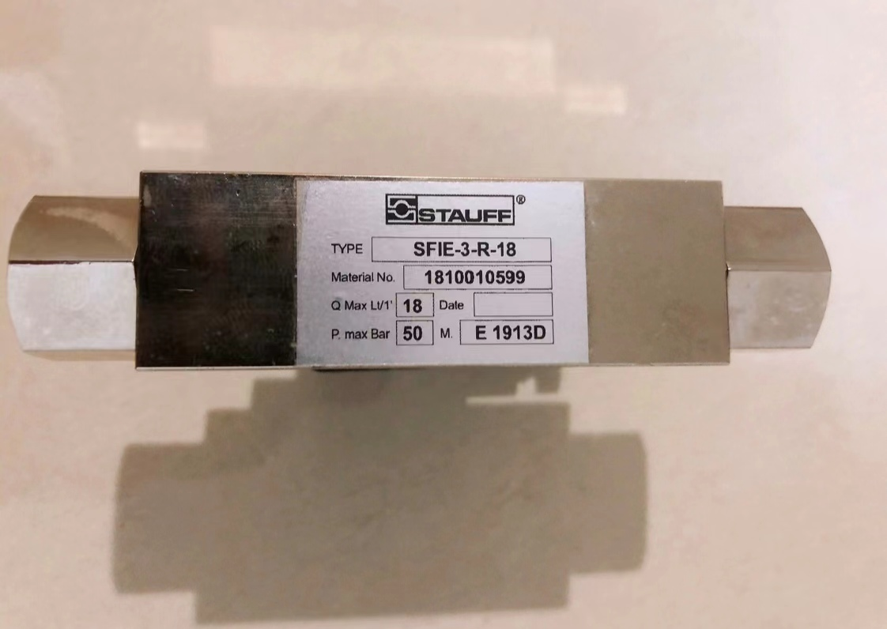
匹配度: 84.5分
开关发讯器SFIE-3-R-18.jpg
#26 时间计数器
型号: SHC77.60
品牌: KUBLER
参数: 3.553.401.351.060

匹配度: 64.3分
时间计数器 SHC77.60.jpg
#27 轴承
型号: SKF6209-2Z/ C3
品牌: SKF

匹配度: 71.4分
轴承6209-2Z C3.jpg
#28 齿轮箱润滑泵弹性联轴器
型号: 28/38
品牌: R+H

匹配度: 91.2分
齿轮箱润滑泵弹性联轴器 SPIDEX 28 38 ALU D（有配套花键）-1.jpg

匹配度: 91.2分
齿轮箱润滑泵弹性联轴器 SPIDEX 28 38 ALU D（有配套花键）-2.jpg

匹配度: 91.2分
齿轮箱润滑泵弹性联轴器 SPIDEX 28 38 ALU D（有配套花键）-3.jpg
#29 人机界面
型号: 触摸屏 TPC7062W
品牌: 昆仑

匹配度: 80.3分
人机界面TPC7062W-1.png

匹配度: 80.3分
人机界面TPC7062W.png
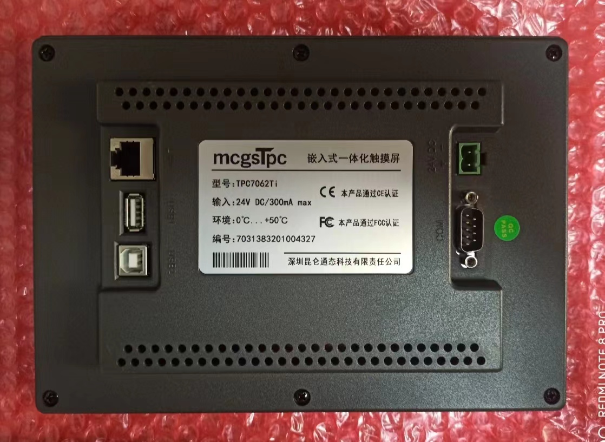
匹配度: 72.9分
人机界面TPC7062Ti-1.jpg
#30 整流器
型号: VUO82-16 N07
品牌: IXYS

匹配度: 83.5分
整流器VUO 82-16 NO7.png
匹配度: 52.6分
制动器60 891.104.1 S 24V 73W 100Nm.jpeg
匹配度: 50.3分
磨损传感器NBB5-18GM60-A2-V1.png
#31 转速监测保护模块
型号: WD260
品牌: 运达
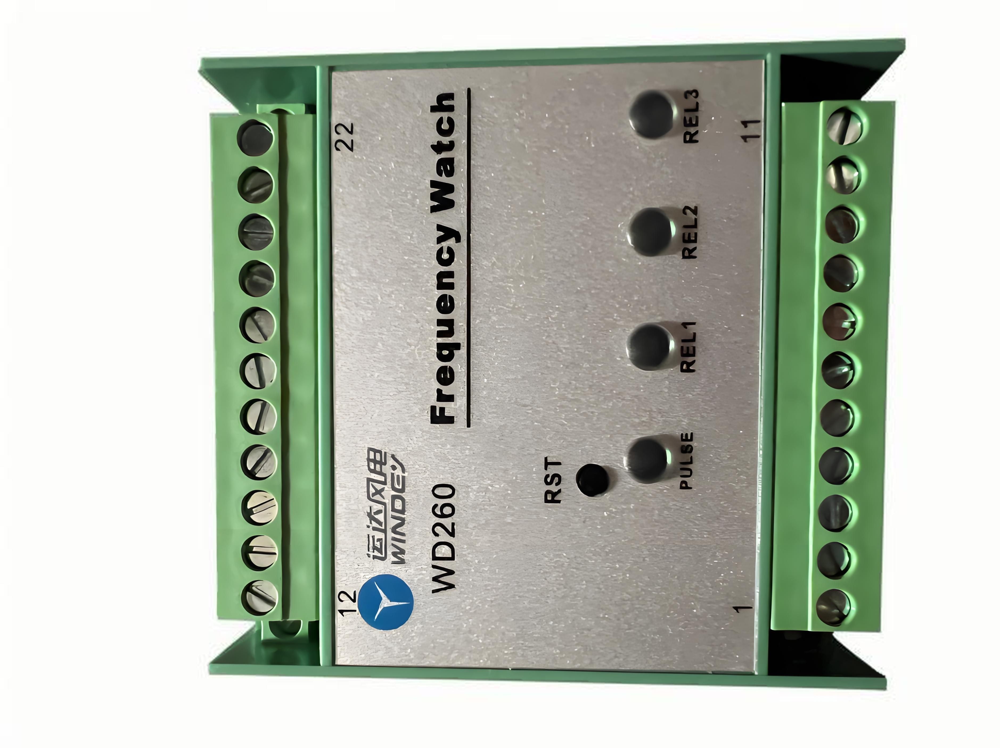
匹配度: 92.6分
转速监测保护模块WD260.jpeg

匹配度: 71.6分
转速检测保护模块WD231-P-1.jpg
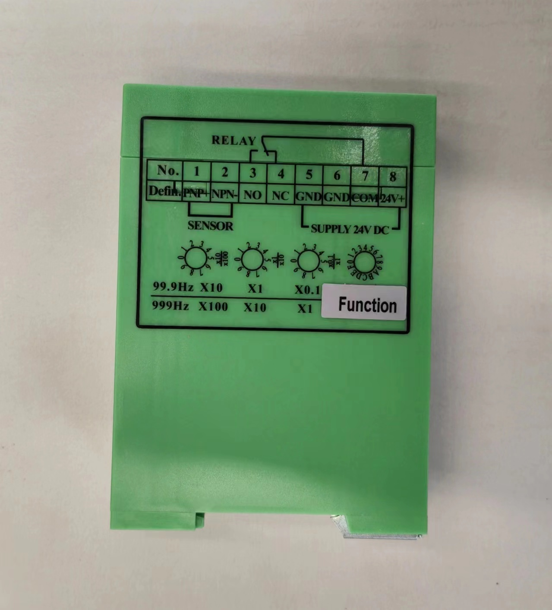
匹配度: 71.6分
转速检测保护模块WD231-P-2.jpg
#32 齿轮箱
型号: WE10800D-01
品牌: 德力佳
参数: 10800kW 速比：223.36 输入转速：7.6r/min

匹配度: 53.4分
齿轮箱WE10800D-01.png
#33 操作模块
型号: WP3050 972305010
品牌: 米塔

匹配度: 84.7分
操作模块WP3050 2COM-1.png

匹配度: 84.7分
操作模块WP3050 2COM-2.png

匹配度: 84.7分
操作模块WP3050 2COM.jpg
#34 控制器
型号: WP4100 978410072
品牌: 米塔

匹配度: 97.0分
控制器WP4100 CONTROLLER（W） 978410072-1.jpg

匹配度: 97.0分
控制器WP4100 CONTROLLER（W） 978410072.png
#35 振动传感器
型号: WT 135-1 D
品牌: CTC

匹配度: 92.5分
振动传感器WT135-1D-1.jpg

匹配度: 92.5分
振动传感器WT135-1D.jpg
#36 油泵电机
型号: 朗高；YD 13 2M-8/4-CR2 3.6/6kW
品牌: 江特-川润定制
参数: 3.6/6kW 690V 5.6/6.5A 710/1440r/min S1 B35

匹配度: 66.7分
油泵电机YD132M-8 4-CR2.png

匹配度: 58.6分
油泵电机YDB160L-8 4-F05.jpg
匹配度: 56.8分
充电电阻DANDTHERM F2 ZR3163150414.jpg
#37 采样板
型号: YD-5.X-CYB-1.0
品牌: 运达
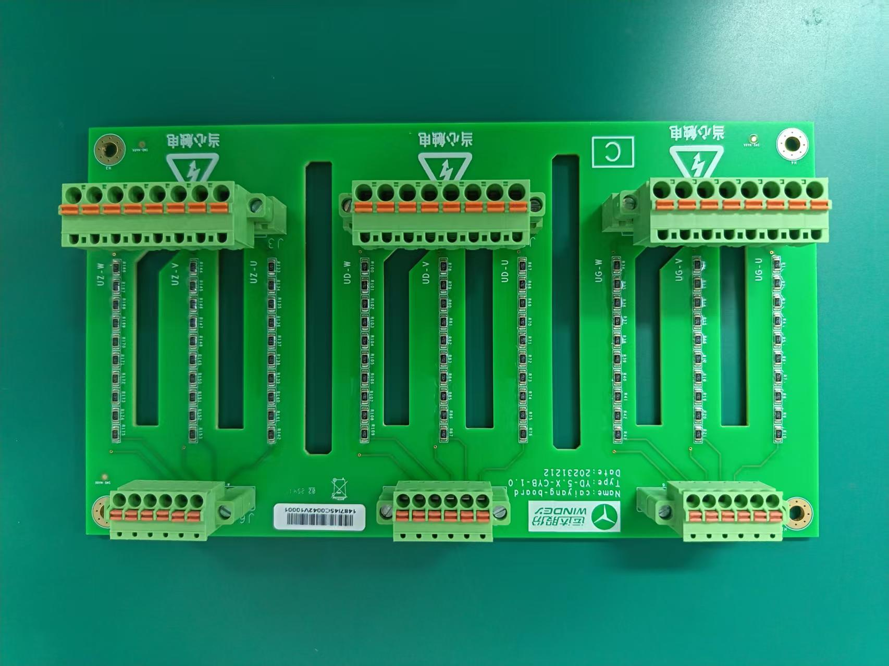
匹配度: 97.4分
采样板YD-5.X-CYB-1.0-1.jpg
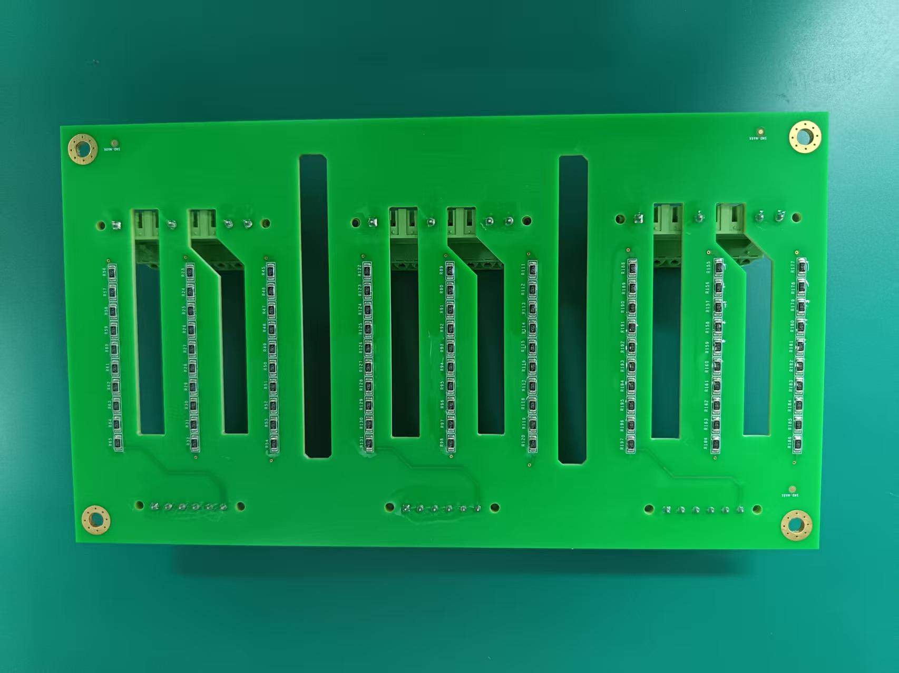
匹配度: 97.4分
采样板YD-5.X-CYB-1.0.jpg

匹配度: 71.6分
环境通讯板YD-5X-ENVCOM-001-1.jpg
#38 环境通信板
型号: YD-5X-ENVCOM-001
品牌: 运达
匹配度: 94.8分
环境通讯板YD-5X-ENVCOM-001-1.jpg
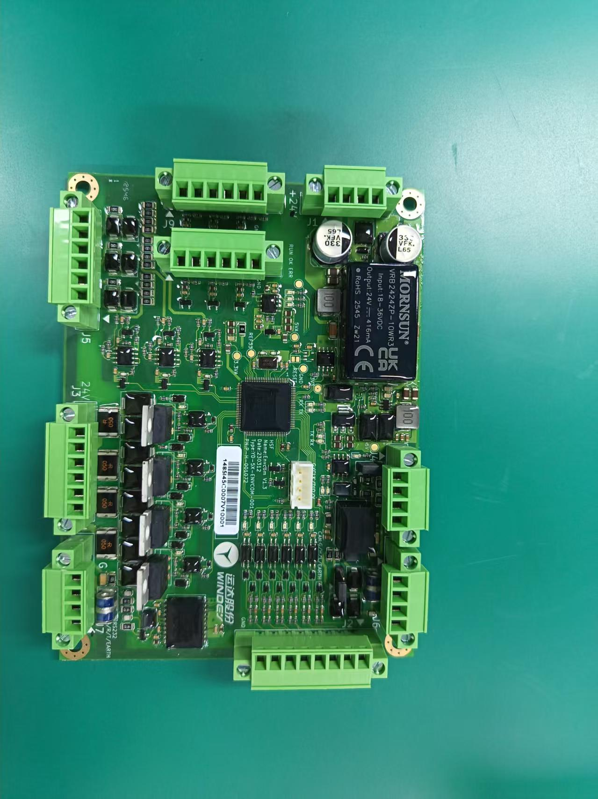
匹配度: 82.9分
环境通讯板YD-5X-ENVCOM-001.jpg
#39 1.5MW双馈异步发电机
型号: YJ89B X2
品牌: 永济
参数: 1520kW 690/420V 1070/390A 1800r/min
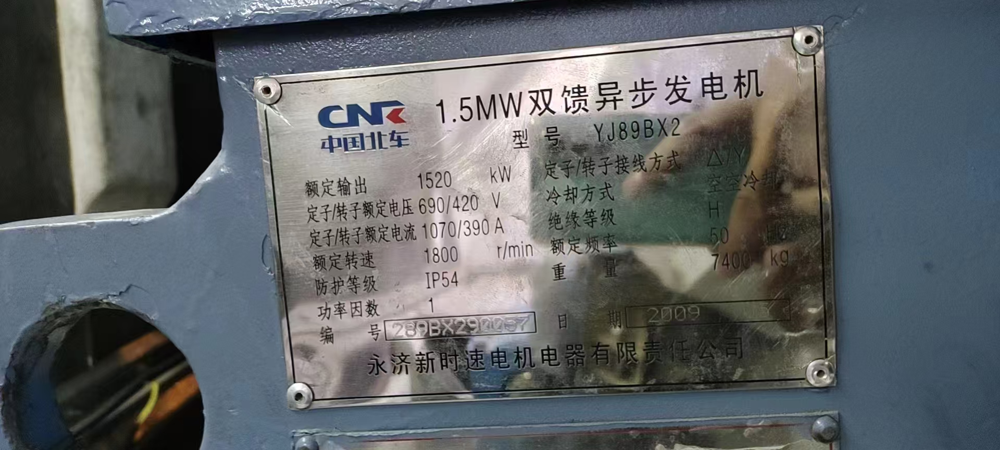
匹配度: 71.7分
1.5MW双馈异步发电机YJ89BX2.jpg
#40 抱闸
型号: 配套SSB变桨电机 891.104.1 S 24V 73W 100Nm
品牌: 麦尔
匹配度: 67.3分
制动器60 891.104.1 S 24V 73W 100Nm.jpeg